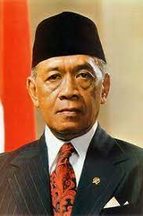

Sri Sultan Hamengkubuwono IX (merdeka.com)
Beliau lahir pada 12 April 1912 kepada pasangan Sri Sultan Hamengkubuwono VIII dan Raden Ajeng Kustilah. Beliau meniti pendidikan dari ELS di Yogyakarta, MULO di Semarang, AMS di Bandung, dan pada 1930-an, ia berkuliah di Rijksuniversiteit Leiden, Belanda. Namun, sebelum menyelesaikan kesarjanaannya, dia dipanggil pulang ke Indonesia dan dinobatkan sebagai sultan Yogyakarta pada 18 Maret 1940.
Hamengkubuwono IX senantiasa mendorong kemerdekaan Indonesia. Ini dapat dilihat dari dukungan spontan menyatakan Yogyakarta bergabung dengan RI tidak lama setelah kemerdekaan Indonesia pada 5 September 1945; dan penyumbangan sebanyak 6 juta gulden ketika perekonomian RI memburuk.
Hamengkubuwono IX berhasil memainkan peran yang besar dalam Serangan Umum 1 Maret 1949 melawan Belanda. Beliau juga pernah mewakili Pemerintah RI untuk menerima penyerahan kedaulatan belanda pada 27 Desember 1949. Semenjak RI merdeka, beliau menduduki jabatan-jabatan penting, seperti:
- Gubernur Daerah Istimewa Yogyakarta (1945-1988)
- Menteri Pertahanan
- Wakil Perdana Menteri (1950-1951)
- Menteri Utama Bidang Ekonomi dan Keuangan (1966-1967)
- Wakil Presiden RI (1973-1978)

Istana Sri Sultan Hamengkubuwono IX
(kiri: saya dan adik ketika mengunjung Yogya; kanan: gambar dari tribunnews.com)